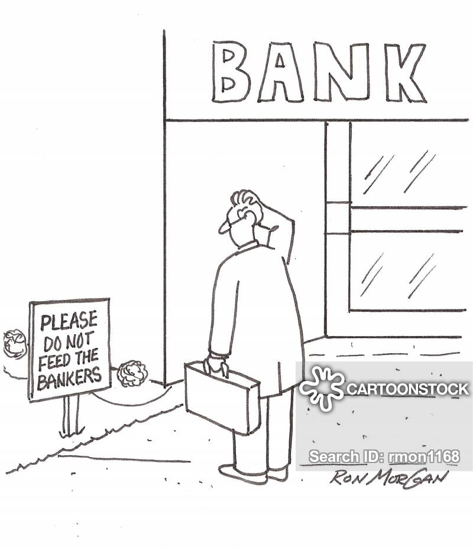
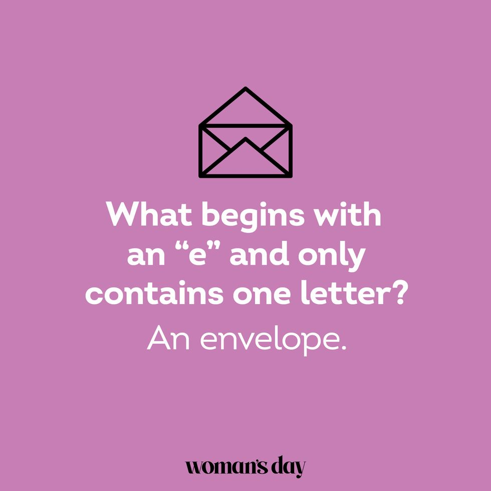

Which AI tool has more wit? Taking two models to the arena to see how they answer riddles and who can get more correct answers
Today, we’re pitting two AI tools against each other: Bard-jan-24-gemini-pro and Claude-2.1. What are they competing on? The realm of riddles. Let’s see which contender has the upper hand in deciphering these riddles.
The Riddle Showdown Begins
We’re kicking off the competition with a riddle (sourced from parade.com:)
“I have branches, but no fruit, trunk or leaves. What am I?”
The Correct Answer: A bank

Bard’s Answer:
Bard accurately identifies the classic answer A bank. However, it doesn’t stop there; Bard offers a spectrum of creative alternatives, from a river’s tributaries to your family tree. This display of alternatives sets a high bar for the showdown.
Claude’s Analytical Assumption:
Claude, on the other hand, opts for an analytical dissection of the riddle, eventually aligning with the family tree as the likeliest answer. While not hitting the bullseye, Claude’s methodical process and final guess of a family tree shows promise in problem solving but I guess it isn’t the funny AI tool, compared to Bard.
For the Kids
Next, we turn to a riddle labeled for the younger audience:
“What has many keys but can’t open a single lock?”
The Correct Answer: A piano
Claude’s Keen Conclusion:
Claude strikes the right chord by suggesting a keyboard. While not the traditional answer, it aligns with the logic of the riddle and showcases Claude’s ability to think within and beyond the box. It’ll count!
Bard’s Reply:
Bard gives not just one reply but a list of possibilities, ultimately landing on the piano as the top contender. Its repertoire of answers, including a calculator and a keypad, all resonate with the riddle’s witty nature.
Figurative height
Delving deeper, I prompted both tools with the following:
“What building has the most stories?”
The Correct Answer: The library

Bard’s literal answer:
Bard, perhaps taking the question too literally, replies with Burj Khalifa. While impressive and factual, it misses the narrative twist of the riddle.
Claude’s Success:
Claude successfully unravels the wordplay and lands on the library. This insightful answer captures the essence of the riddle, adding a point to Claude’s scorecard.
Envelopes & Queues
As the contest draws to a close, we’re presented with two more riddles to tease the tools:
- “What begins with an ‘e’ and only contains one letter?”
- Answer: An envelope

- “What word is pronounced the same if you take away four of its five letters?”
- Answer: Queue
Both Bard and Claude exhibit winning moments, Claude correctly unveils the envelope riddle and Bard cleverly cracking queue.
Bard’s shining moment:
There is only one five-letter word in English that maintains its pronunciation after removing any four of its letters: queue.
Even when you remove “ueue” and are left with “q”, the pronunciation remains the same.
Claude’s cleverness:
Therefore, the answer must be: an envelope. You got me with the clever trick of the answer being a literal letter.
Conclusion:
The face-off between Bard-jan-24-gemini-pro and Claude-2.1 has for sure been a spectacle. Each contender had its moments of glory, flexing their computational creativity. While neither achieved a flawless victory, the competition proved that AI’s ability to tackle riddles is not just about getting the right answer—it’s about the journey of thought it takes to get there.
Who emerged as the wittiest? That’s for you to decide.